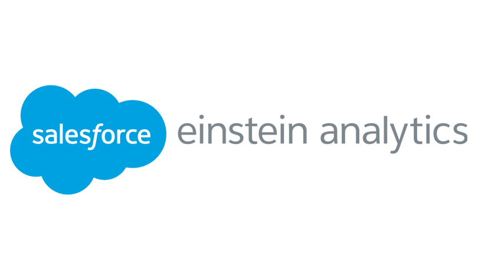
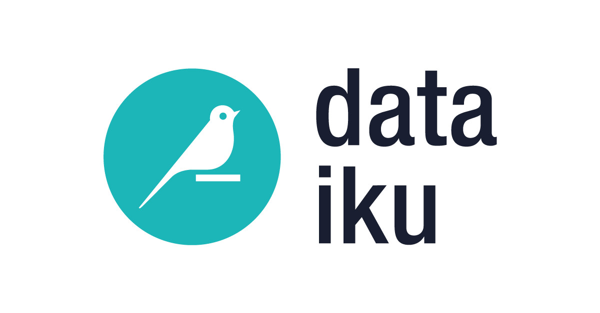

About me
Hello! I'm a dedicated graduate student currently pursuing a Master's in Data Science at RIT, NY. With four years of professional experience, I've evolved into a seasoned Senior Data Scientist, specializing in transforming raw data into actionable insights.
My journey involves navigating through intricate datasets, developing and deploying predictive models, and using data-driven strategies to solve complex challenges. Proficient in programming languages such as Python and R, I possess a knack for data visualization, enabling me to communicate findings effectively to both technical and non-technical stakeholders. Beyond technical skills, I bring a passion for collaborative problem-solving and an eagerness to contribute to innovative projects.
I'm currently seeking full-time opportunities in Data Science, Machine Learning, and Product Management. I'm open to relocation and remote work.
What i'm doing
-

Data Science
Making data driven decisions to solve business problems.
-

Smart Manufacturing
Leveraging my undergrad knowledge to solve problems in manufacturing I am solving problems in predictive maintenance space.
-

Human and AI
Pioneeing innovative solutions that harmonize human insights with artificial intelligence for impactful results.
-

Music
Mostly you will find me listning to music.
Resume
Education
-
Masters in Data Science
Rochester Institute of Technology, NY, USA 2023 — PresentBuilding upon 4 years of hands-on data analysis, machine learning, and data visualization experience to further enhance skills in extracting valuable insights from large datasets, all with the aim of continuing to excel in data-driven decision-making and innovation.
-
Bachelor of Engineering - Industrial and Production
IIT, Delhi, India 2015 — 2019Ratione voluptatem sequi nesciunt, facere quisquams facere menda ossimus, omnis voluptas assumenda est omnis..
Experience
-
Data Scientist, R&D
Infinite Uptime, Pune, India 2022 — 2023• Engineered an automated diagnostics system utilizing Python to accurately assess the health of the machine, while also expanding the system's underlying logic to incorporate emerging failure modes
• Engineered an automated diagnostics system utilizing Python to accurately assess the health of the machine, while also expanding the system's underlying logic to incorporate emerging failure modes
-
Data Scientist II
Wolters Kluwer, Pune, India 2019 — 2022• Responsible for helping sales team with a 360° view of the competitive landscape to win new prospects
• Implemented a Python-based end-to-end clean-up of the quote creation process by building an in-house product to enforce consistent pricing mechanisms of quote generation for all global sales representatives, saving $1.2M
• Used advanced statistics and analytics to deliver recommendations, helping sales team exceed annual quotas
• Built data pipelines to collate data from Eloqua, and Salesforce (inside sales), using them to develop a marketing funnel, lead journey & campaign attribution models
• Devised python-based processes to seamlessly conduct implementation/transactional surveys, enabling extraction of insights derived from a comprehensive competitive study encompassing 150+ competitors
My skills
-
Machine Learning
80% -
Product Management
70% -
Automation
80% -
Data visualization
90%
-
Python Programming
80% -
Feature Engineering
80% -
Statistical Analysis
70% -
Database Management
80%
Tech Stack


-

- 
- 